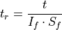
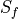
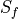

shared_tools¶
Todo
add paragraph description of the module
The tools are defined in pyDeltaRCM.shared_tools.
Time scaling functions¶
Scaling of real-world time and model time is an important topic covered in detail in Time in pyDeltaRCM. Several functions are defined here which can help with scaling between model and real-world time.
Scale the model time to “real” time.
Model time is executed as assumed flooding conditions, and executed at the per-second level, with a multi-second timestep. This model design implicitly assumes that the delta is always receiving a large volume of sediment and water at the inlet. This is unrealistic, given that rivers flood only during a small portion of the year, and this is when morphodynamic activity is largest. See Time in pyDeltaRCM for a complete description of this assumption, and how to work with the assumption in configuring the model.
Using this assumption, it is possible to scale up model time to “real” time, by assuming an intermittency factor. This intermittency factor is the fraction of unit-time that a river is assumed to be flooding.

where
 is the model time (
is the model time (time), is the “real” scaled time,
is the “real” scaled time,  is the
intermittency factor, and  is the scale factor to convert base
units of seconds to units specified as an input argument. Note that this
function uses
is the
intermittency factor, and  is the scale factor to convert base
units of seconds to units specified as an input argument. Note that this
function uses _scale_factorinternally for this conversion.- Parameters
time (
float) – The model time, in seconds.If (
float, optional) – Intermittency factor, fraction of time represented by morphodynamic activity. Should be in interval (0, 1]. Defaults to 1 if not provided, i.e., no scaling is performed.units (
str, optional) – The units to convert the scaled time to. Default is to return the scaled time in seconds (seconds), but optionally supply argument days or years for unit conversion.
- Returns
scaled – Scaled time, in
units, assuming the intermittency factorIf.- Return type
float- Raises
ValueError – if the value for intermittency is not
0 < If <= 1.
Scaling factor between model time and “real” time.
The scaling factor relates the model time to a real worl time, by the assumed intermittency factor and the user-specified units for output.
- Parameters
If (
float) – Intermittency factor, fraction of time represented by morphodynamic activity. Must be in interval (0, 1].units (
str) – The units to convert the scaled time to. Must be a string in [‘seconds’, ‘days’, ‘years’].
Utilities¶
Additionally, functions defined in pyDeltaRCM.shared_tools manage the random state of the model, and help with documentation and version management.
Set the random seed from an integer.
Set the seed of the random number generator with a single integer. Importantly, this function will affect the state of the numba random number generator, rather than the numpy generator.
This function is called during model intialization, but is not called during loading a model from checkpoint (
load_checkpoint()) where the random number generator state is configured via theset_random_state()function.Important
This function is preferred to setting the random seed directly. If you are working with model subclassing, interacting with the numpy random number generator directly will lead to a model that is not reproducible!
Internally, the method is simply the below line; however it is crucial this happens inside a jitted function, in order to affect the state of the numba random number generator seed.
np.random.seed(_seed)
- Parameters
_seed (
int) – Integer to use as the random number generator seed. Should be in interval[0, 2^32].
Get the random state as a tuple.
Get the random state from a tuple in the form returned by
numba._helperlib.rnd_get_state(). This tuple contains the necessary information for resuming a checkpoint from the exact same random number generator state.Important
You probably do not need to use this function. Be sure you know exactly how you are affecting the random number generator state before using this function, or you are likely to create a model that cannot be peproduced.
See also
set_random_seed().- Returns
state – Random number generator state as a tuple.
- Return type
tuple
Set the random state from a tuple.
Set the random state from a tuple in the form returned by
numba._helperlib.rnd_get_state().Important
You probably do not need to use this function. Be sure you know exactly how you are affecting the random number generator state before using this function, or you are likely to create a model that cannot be peproduced.
See also
set_random_seed().- Parameters
state (
tuple) – Random number generator state as a tuple.
Helper for creating and tearing down models in documentation.
This function should be used as a context manager, to create a DeltaModel with a temporary folder as output, rather than anywhere in the project structure.
Examples
>>> with _docs_temp_directory() as output_dir: ... delta = pyDeltaRCM.DeltaModel(out_dir=output_dir)
Extract version from file.
Extract version number from single file, and make it availabe everywhere. This function is used to make sure that when the version number is incremented in the pyDeltaRCM._version module, it is properly updated throughout documentation and version-controlled release.
Note
You probably don’t need to use this function.
- Returns
ver_str – Version number, as a string.
- Return type
str
Examples
>>> pyDeltaRCM.shared_tools._get_version()